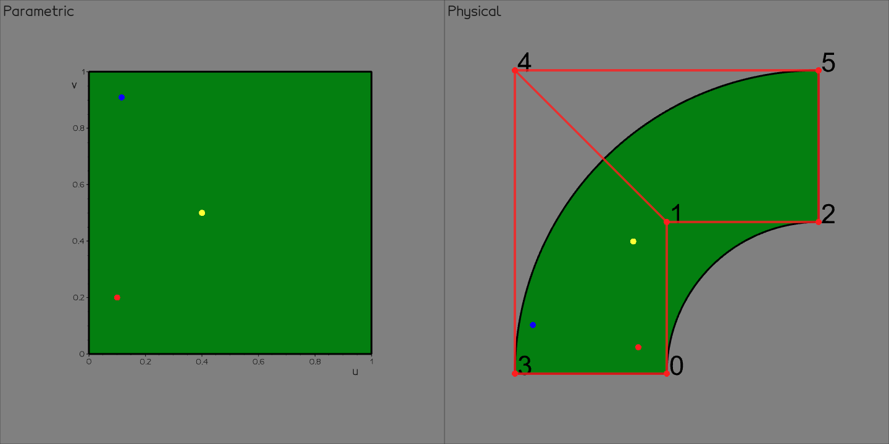
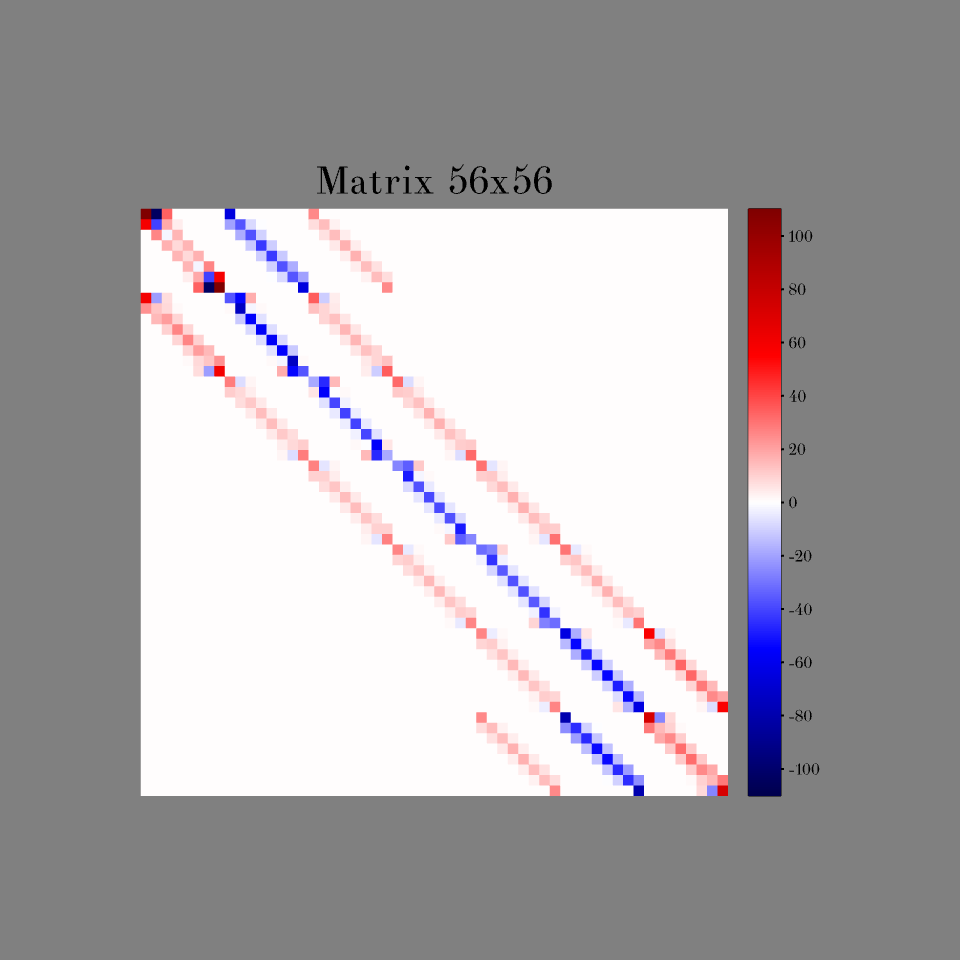
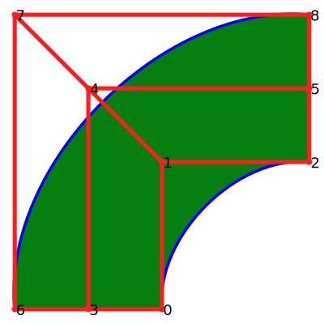

{kind=link}
splinepy - Library for prototyping spline geometries of arbitrary dimensions and degrees, and IGA
{kind=link}
Install guide#
splinepy wheels are available for python3.8+ for MacOS, Linux, and Windows:
# including all optional dependencies
pip install "splinepy[all]" # quotation marks required for some shells
# or
pip install splinepy
You can install it directly from the source:
git clone git@github.com:tataratat/splinepy.git
cd splinepy
git submodule update --init --recursive
pip install -e .
Documentation#
Here are links to related documentation for the library:
Quick start#
1. Create a spline#
Here, we will create a NURBS for the following example. Alternatively, we can also create Bezier, RationalBezier, and BSpline.
import splinepy
# Initialize nurbs with any array-like input
nurbs = splinepy.NURBS(
degrees=[2, 1],
knot_vectors=[
[0, 0, 0, 1, 1, 1],
[0, 0, 1, 1],
],
control_points=[
[-1.0, 0.0],
[-1.0, 1.0],
[0.0, 1.0],
[-2.0, 0.0],
[-2.0, 2.0],
[0.0, 2.0],
],
weights=[
[1.0],
[2**-0.5],
[1.0],
[1.0],
[2**-0.5],
[1.0],
],
)
# vizusalize
nurbs.show()

2. Modifications#
All the splines can be modified. For example, by
directly accessing properties,
reducing degrees and removing knots with a specified tolerance
Note: currently {3, 4} are limited to BSpline families.
# start with a copy of the original spline
modified = nurbs.copy()
# manipulate control points
# 1. all at once
modified.control_points /= 2.0
# 2. indexwise (flat indexing)
modified.control_points[[3, 4, 5]] *= [1.3, 2.0]
# 3. with grid-like indexing using multi_index helper
multi_index = modified.multi_index
modified.control_points[multi_index[0, 1]] = [-1.5, -0.3]
modified.control_points[multi_index[2, :]] += [2.0, 0.1]
modified.show() # visualize Nr. 1
# elevate degrees and insert knots
modified.elevate_degrees([0, 1])
modified.show() # visualize Nr. 2
modified.insert_knots(1, [0.5])
modified.show() # visualize Nr. 3
{kind=link}
3. Evaluate#
You can evaluate spline’s basis functions, mapping, and their derivatives by giving parametric coordinate queries. They should be 2D array-like objects and functions return 2D np.ndarray.
{kind=link}
# first, create parametric coordinate queries
queries = [
[0.1, 0.2], # first query
[0.4, 0.5], # second query
[0.1156, 0.9091], # third query
]
# evaluate basis, spline and derivatives.
# for derivatives, specify order per parametric dimension.
basis = nurbs.basis(queries)
basis_derivative = nurbs.basis_derivative(queries, [1, 1])
physical_coordinates = nurbs.evaluate(queries)
physical_derivatives = nurbs.derivative(queries, [2, 0])
Many of splinepy’s multi-query functions can be executed in parallel using multithread executions on c++ side. For that, set either the global flag or pass the nthreads argument.
p_basis0 = nurbs.basis(queries, nthreads=2)
# or
splinepy.settings.NTHREADS = 3
p_basis1 = nurbs.basis(queries)
We also implemented point inversion for splines.
# see docs for options
para_coordinates = nurbs.proximities(physical_coordinates)
import numpy as np
assert np.allclose(queries, para_coordinates)
In cases, where you may have to compute derivatives at the inverted locations or you just want to know more information about the search, you can set the keyword return_verbose=True:
(
parametric_coordinates,
physical_coordindates,
physical_difference,
distance,
convergence_norm,
first_derivatives,
second_derivatives,
) = nurbs.proximities(physical_coordinates, return_verbose=True)
4. Helper Modules#
There’s a list of helper modules under the namespace splinepy.helpme to boost prototyping efficiencies. Please check out the full list here!
Here are some highlights.
4.1 Create#
splinepy.helpme.create module can help you create several primitive shapes and another spline based on the existing spline.
# basic splines
box = splinepy.helpme.create.box(1, 2, 3) # length per dim
disk = splinepy.helpme.create.disk(
outer_radius=3, inner_radius=2, angle=256
)
torus = splinepy.helpme.create.torus(
torus_radius=3, section_outer_radius=1.5
)
splinepy.show(["box", box], ["disk", disk], ["torus", torus])
{kind=link}
For the latter, you can directly access such functions through spline.create.
# based on existing splines
extruded = nurbs.create.extruded(extrusion_vector=[1, 2, 3])
revolved = nurbs.create.revolved(
axis=[1, 0, 0], center=[-1, -1, 0], angle=50
)
splinepy.show(["extruded", extruded], ["revolved", revolved])
{kind=link}
4.2 Extract#
Using splinepy.helpme.extract module, you can extract meshes (as a gustaf object)
# extract meshes as gustaf objects
control_mesh = nurbs.extract.control_mesh()
control_points = nurbs.extract.control_points()
mesh = nurbs.extract.faces([201, 33]) # specify sample resolutions
splinepy.show(
["control mesh", control_mesh.to_edges()],
["control points", control_points],
["spline", mesh],
)
{kind=link}
or part of splines from an existing spline using spline.extract.
# extract splines
boundaries = nurbs.extract.boundaries()
partial = nurbs.extract.spline(0, [0.5, 0.78])
partial_partial = nurbs.extract.spline(0, [0.1, 0.3]).extract.spline(
1, [0.65, 0.9]
)
bases = nurbs.extract.bases() # basis functions as splines
# insert knots to increase number of bezier patches
inserted = nurbs.copy()
inserted.insert_knots(0, [0.13, 0.87])
beziers_patches = inserted.extract.beziers()
splinepy.show(
[
"boundaries and part of splines",
boundaries,
partial,
partial_partial,
],
["beziers", beziers_patches],
["bases", bases],
)
{kind=link}
4.3 Free-form deformation#
Together with mesh types of gustaf, we can perform free-form deformation
import gustaf as gus
# create gustaf mesh using extract.spline()
# or use gustaf's io functions (gustaf.io)
mesh = splinepy.helpme.create.torus(2, 1).extract.faces([100, 100, 100])
# initialize ffd and move control points
ffd = splinepy.FFD(mesh=mesh)
multi_index = ffd.spline.multi_index
ffd.spline.control_points[multi_index[-1, :, -1]] += [3, 0.5, 0.1]
ffd.show()
# get deformed mesh - FFD.mesh attribute deforms mesh before returning
deformed = ffd.mesh
{kind=link}
4.4 Fitting#
You can fit your point data using splines.
data = [
[-0.955, 0.293],
[-0.707, 0.707],
[-0.293, 0.955],
[-1.911, 0.587],
[-1.414, 1.414],
[-0.587, 1.911],
]
curve, residual_curve = splinepy.helpme.fit.curve(data, degree=2)
# you can also use any existing spline's basis
surface, residual_surface = splinepy.helpme.fit.surface(
data, size=[3, 2], fitting_spline=nurbs
)
# set visuals for data
d = gus.Vertices(data)
d.show_options.update(c="blue", r=15)
splinepy.show(
["curve fit", d, curve],
["surface fit", d, surface],
)
{kind=link}
4.5 Mapper#
Mapper class is a geometric mapping helper that brings expression and derivatives into the physical domain. This is especially useful for trying collocation methods. Here, we show how you can create a left hand side matrix for a laplace problem - see this example for a full solution:

# create solution spline
solution_field = nurbs.create.embedded(1)
# refine
solution_field.elevate_degrees([0, 1])
solution_field.uniform_refine(n_knots=[4, 4])
# create matrix using mapper
# collocation points at greville abcissae
mapper = solution_field.mapper(reference=nurbs)
laplacian, support = mapper.basis_laplacian_and_support(
solution_field.greville_abscissae()
)
laplacian_matrix = splinepy.utils.data.make_matrix(
laplacian,
support,
n_cols=solution_field.control_points.shape[0],
)
5. Microstructure#
(Rational) Bezier splines in splinepy are capable of composition, where you can place a spline (inner spline/function) into another spline (outer spline/function) in an exact fashion. We can systematically perform this to create certain shapes that consist of multiple inner splines. The resulting shapes are called microstructures and the inner spline that serves as a basis shape is called tile.
splinepy has several tiles that are ready to use. Implementations of available tiles can be found here. However, it is easier to access them through module functions:
splinepy.microstructure.tiles.show()
{kind=link}
You can also filter the available tiles by their parametric and geometric dimensions:
# get specific dimensions as dict
para_2_dim_2 = splinepy.microstructure.tiles.by_dim(para_dim=2, dim=2)
dim_2 = splinepy.microstructure.tiles.by_dim(dim=2)
The composition can then be created as follows:
# create microstructure generator
microstructure = splinepy.Microstructure()
# set outer spline and a (micro) tile
microstructure.deformation_function = nurbs
microstructure.microtile = splinepy.microstructure.tiles.get("Cross2D")
# tiling determines tile resolutions within each bezier patch
microstructure.tiling = [5, 3]
microstructure.show()
# extract only generated parts as multipatch
generated = microstructure.create()
{kind=link}
Please take a look at this example for a broad overview of what microstructures can do!
6. Multipatch#
In practice, including Microstructure`s, it is common to work with multiple patches. For that, we provide a :raw-html-md:`Multipatch class, equipped with various useful functionalities:
patch interface identification
boundary patch identification
boundary assignment with various options
subpatch / boundary patch extraction
# use previously generated microtiles
interface_info_array = generated.interfaces
# Mark boundaries to set boundary conditions
# In case of micro structure, you can use outer spline's boundary
def is_left_bdr(x):
left = nurbs.extract.boundaries()[3]
return (left.proximities(x, return_verbose=True)[3] < 1e-8).ravel()
generated.boundary_from_function(is_left_bdr, boundary_id=5)
splinepy.show(
["All", generated],
["Boundaries", generated.boundary_multipatch()],
["Boundary 5", generated.boundary_multipatch(5)],
)
# export for the solver
splinepy.io.gismo.export("microstructure.xml", generated)
{kind=link}
7. Input/output and vector graphics#
splinepy supports various IO formats.
Most notably, gismo and mfem formats allow a seamless transition to analysis. In addition splinepy is also able to import and export the iges format. Specifically, Type 126 (B-Spline curve) and Type 128 (B-Spline surface).
# export
splinepy.io.mfem.export("quarter_circle.mesh", nurbs)
# load
quarter_circle = splinepy.io.mfem.load("quarter_circle.mesh")
svg format enables true vector graphic export which preserves the smoothness of splines for publications/documentation. Try to zoom in!
{kind=link}
splinepy.io.svg.export("nurbs.svg", nurbs)

Try online#
You can also try splinepy online by clicking the Binder badge above!
Contributing#
splinepy welcomes any form of contributions! Feel free to write us an issue or start a discussion. Contribution guidelines can be found here.
Table of Contents#
Library